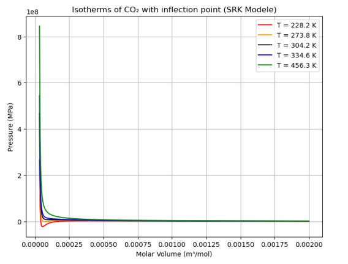

 Real-gas isotherms | L3 Modeling ProjectExperimental Physics Project in English |

| Programme | Bachelor UPPA Anglet — Physic Chemistry |
|---|---|
| Description | This thermodynamic modeling project was carried out as part of the third year of the Bachelor's degree (Licence 3) in Physical and Chemical Sciences at the University of Pau and the Adour Region (UPPA) in Anglet. It focuses on the study and simulation of the PVT (Pressure-Volume-Temperature) behavior of real gases. The core objective of this work was to implement and analyze the Soave-Redlich-Kwong (SRK) equation of state. This approach makes it possible to accurately describe the thermodynamic properties of fluids beyond the simplifications of the ideal gas law, by introducing corrections for molecular interactions and the volume occupied by the particles themselves. The project is structured around the following lines of analysis:
|
| Documents | Report (PDF, 1.6 MB) · Presentation (PDF, 622 kB) |
Last updated: 26/06/2026